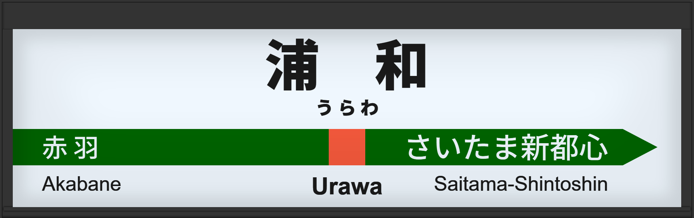

| ←赤羽 | ■ 宇都宮線 | さいたま新都心→ |
|---|
2004年10月に常磐初期型ATOS放送を導入する。
2009年8月には常磐改良型に更新。
2015年1月に宇都宮型に更新され、4番線の声優が津田英治氏から田中一永氏に更新される。
2023年12月に宇都宮改良型に更新される。
| 3 | ■ 宇都宮線 上野方面 |
3番線次発予告 3番線接近放送 |
常磐初期型でした。 放送は「普通 上野行」です。 |
|---|---|---|---|
| 4 | ■ 高崎線 ■ 宇都宮線 盛岡方面 高崎方面 |
4番線次発予告（普通 宇都宮行） 4番線接近放送（普通 宇都宮行） 4番線接近放送（快速 アーバン 高崎行） 4番線発車メロディ（すすきの高原 V2） |
常磐初期型でした。 |